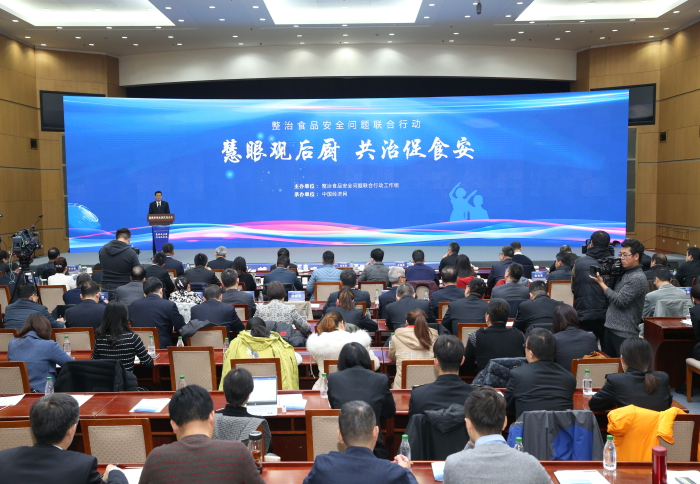

11月22日，“不忘初心、牢记使命”主题教育专项整治食品安全问题联合行动工作组在京举办“慧眼观后厨 共治促食安”校园食品安全主题活动。活动通过线上检查和线下监管协同，采用融媒体直播方式，实景展现“互联网+明厨亮灶”智慧监管新模式在校园食品安全管理中的应用，直观呈现整治校园食品安全问题所取得的阶段性成果，让家长们足不出户就可以了解孩子们在学校的食品安全状况，参与到学校食堂的管理之中。整治食品安全问题联合行动工作组组长、市场监管总局局长肖亚庆出席活动并讲话。
肖亚庆指出，守护校园食品安全是党中央、国务院关于加强食品安全工作的攻坚行动之一，也是在“不忘初心、牢记使命”主题教育中开展食品安全问题专项整治的重点任务。坚持开门搞整治，把食堂后厨从幕后推到前台，从过去“闲人免进”到现在“晒在网上”，从学校管理和部门监管扩展到社会公众监督，完善了治理机制，提高了治理效能。这次活动，既是对专项整治校园食品安全问题的线上督查调度，也是对食品安全治理能力的现场检阅、对食品安全社会共治的有效推动。

肖亚庆指出，要聚焦人民群众的操心事、揪心事、烦心事，围绕“可检验、可评判、可感知”目标要求，坚决落实整治食品安全问题联合行动的各项任务。对违法问题深挖彻查，对不法分子严惩重处。要督促落实校园食品安全主体责任，鼓励师生和家长参与校园食品安全管理，形成部门联动、社会协同、公众参与的长效制度机制，共同守护校园食品安全，让党中央放心，让人民群众满意。
肖亚庆强调，食品安全没有“零风险”，但监管必须“零容忍”。各地各有关部门要以习近平新时代中国特色社会主义思想为指导，深入学习贯彻党的十九届四中全会精神，坚决落实“四个最严”要求，适应食品安全形势的新变化和人民群众的新期待，大力推进智慧监管，将传统的监管模式与现代信息技术深度融合，不断完善食品安全治理体系，提升食品安全治理能力。
深圳市副市长黄敏、南京市金陵中学河西分校副校长颜廷瑜、全国人大代表辽宁省辽阳市第一中学高级教师王家娟作了发言，交流了保障校园食品安全的经验和做法，对在“不忘初心、牢记使命”主题教育中专项整治校园食品安全问题取得的成效予以充分肯定。
中央纪委国家监委驻市场监管总局纪检监察组组长刘实，联合行动工作组成员单位负责同志，部分人大代表、政协委员，中小学和幼儿园、供餐企业、新闻媒体和家长代表参加活动。联合行动工作组副组长、市场监管总局副局长孙梅君主持活动。